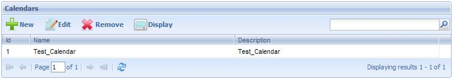

The Calendars application allows setting up the different work calendars used in the system. The following figure shows this application interface:  The following sections describe the different components making up the Calendars application. Button ToolbarNew: The definition of new calendars is performed through this button. By clicking on this button the following dialog is displayed:
In this dialog, the user must specify an exclusive name for the new calendar and optionally a description of this calendar. Edit: By selecting a calendar from the grid and pressing this button, the user accesses a dialog that will allow him modifying the selected calendar. This dialog is the same shown when creating a new calendar and allows modifying all the data of the selected calendar with the exception of the name. Remove: To delete a calendar the user must first select it from the calendar grid and then press this button. A dialog similar to the following one will be displayed to confirm the deletion:
By clicking on the OK button, the user confirms the calendar deletion. Display: To visualize the information of a calendar the user must first select it and then press the "Display" button. Calendar Grid
|
| Backlinks | |
| Toc:GeneXus BPM Suite | Process Manager |